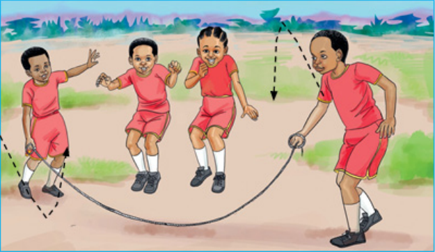

Tucheze mchezo wa kuruka kamba
Kuruka kamba watu wawili na zaidi
Mchezo huu huchezwa na watu wawili na zaidi kwa kupokezana.

Jinsi ya kuruka kamba watu wawili na zaidi
- Kuwe na washika kamba wawili.
- Mmoja ashike mwanzo na mwingine mwisho wa kamba.
- Washika kamba waanze kurusha kamba.
- Waliosimama waanze kuruka huku wakiimba.
- Warukaji wakiikanyaga kamba watatoka na warushaji wataingia.